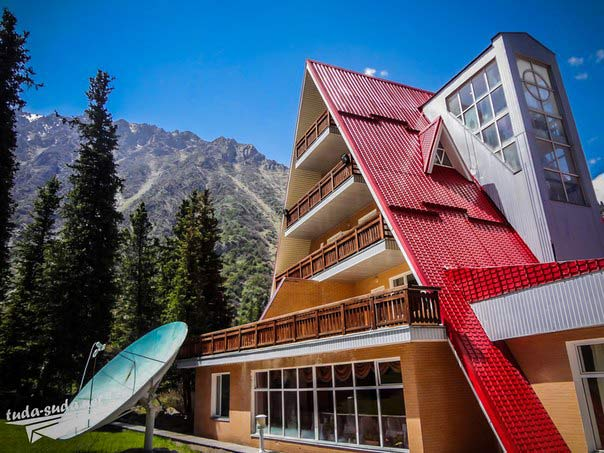

Приют Рацека
Высота: 3 370 м. Отдых в горах: тёплая постель, горячая еда и тишина вершин за окном.
Маршруты, приюты и вершины Ала-Арчи. Отмечайте восхождения и смотрите, кто забирается выше всех.
Отметить вершинуЛедники, альпийские луга и гранитные стены: рядом со столицей и в то же время в другом мире.
Высота: 3 370 м. Отдых в горах: тёплая постель, горячая еда и тишина вершин за окном.

Высота: до 4 870 м. Поднимитесь выше облаков, где вас ждут вершины.

Тёплая постель, горячая еда и тишина Ала-Арчи за окном.
Добавьте её в свой список и поднимитесь в рейтинге.